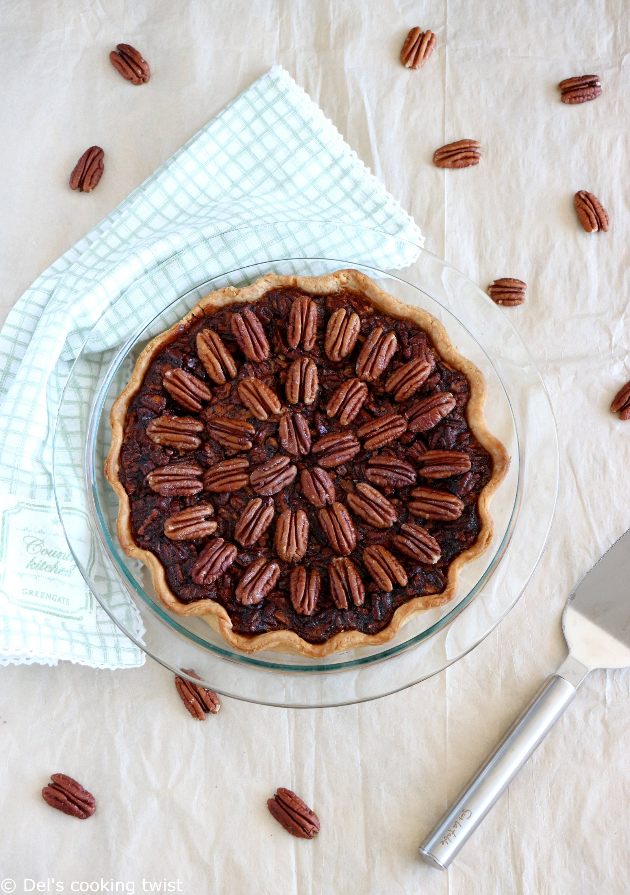

De dagen mogen dan donkerder zijn, maar een verwarmend gerecht met noten
na een lekkere herfstwandeling in het bos, dat is pure verwennerij.
De pecan pie maakt je blij.

Tegenwoordig is de pecan pie vooral een symbool geworden voor het zuidoosten van de V.S. Niet verwonderlijk eigenlijk,
want daar worden ook de meeste pecannoten verbouwd en geoogst. Vanuit het zuiden is wel de traditie ontstaan om de pecan
pie als dessert te serveren na het Thanksgiving-maal, iets wat nu ook in vele andere delen van de V.S. wordt gedaan.
In de loop der jaren hebben vele families in het zuiden of daarbuiten inmiddels hun eigen recept en eigen versie van deze taart
ontwikkeld. Mijn Amerikaanse collega vertelde hoe zijn moeder (hoewel geen keukenprinses) jarenlang gedreven aan het bakken
was geweest, totdat zij eindelijk het recept en de versie van de pecan pie had, die haar (en haar familie) het meest kon bekoren.
En gelijk had ze, het is namelijk een heerlijke taart.